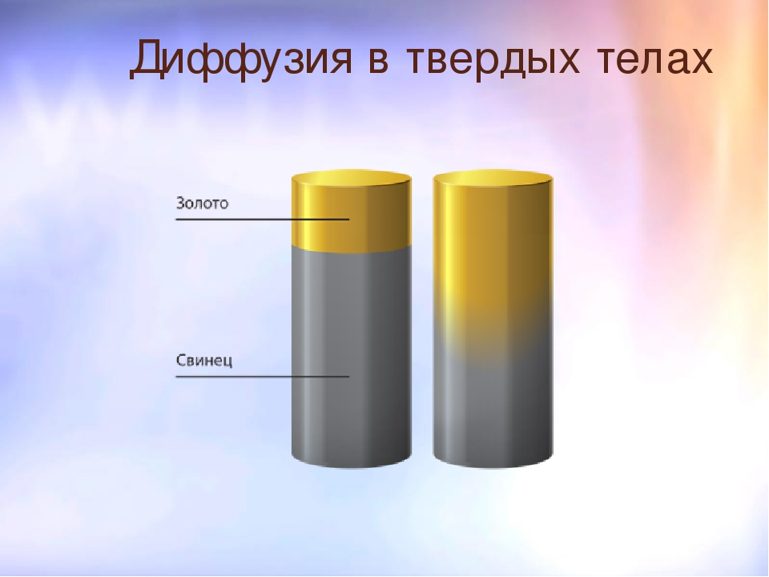

Диффузия вокруг нас
Диффузия — это процесс взаимного проникновения молекул одного вещества между молекулами другого. При этом перенос вещества происходит из области с высокой концентрацией в область с низкой концентрацией.
«Но как это возможно? В каких веществах и телах происходит диффузия?» — спросите вы. Не беспокойтесь, сейчас во всем разберемся!
Строение вещества и агрегатные состояния
В зависимости от агрегатного состояния, в газах, жидкостях и твердых телах меняются две вещи. Во-первых, расстояние между молекулами. Давайте вспомним (или догадаемся), каким должно быть расстояние между молекулами, чтобы предмет характеризовали слова «твердый», «крепкий», «держащий форму»? Правильно, расстояние должно быть очень маленьким, чтобы молекулы выстраивались в стройные рядочки и, держась друг за друга, не позволяли телу растечься и потерять форму.
А если нам все же нужна эта текучесть? Тогда расстояние между молекулами нужно немного увеличить, но так, чтобы силы взаимодействия еще держали молекулы рядом друг с другом и они не разлетались по всему объему сосуда. Представьте, как тяжело было бы пить сок, если бы его пришлось ловить по всей комнате!
С газами происходит именно такая история. Газы (кислород, водород, хлор и другие) также состоят из молекул, но расстояние между ними настолько большое, что они обладают свойствами, отличными от свойств жидкостей и твердых тел: газы занимают весь предоставленный объем, легко сжимаются, не имеют своей формы.
Броуновское движение — беспорядочное движение микроскопических видимых взвешенных частиц твердого вещества в жидкости или газе, вызываемое тепловым движением частиц жидкости или газа.

«Это все, конечно, увлекательно, — можете возразить вы, — но когда возникает диффузия?»
Диффузия газов
Представьте футбольное поле с двумя командами. В начале игры каждая стоит на своей части, но как только звучит свисток арбитра, футболисты начинают матч, каждую секунду занимая новое положение. В конечном итоге мы увидим, как команды перемешались между собой. То же самое происходит и в процессе диффузии.
Интересно, что чем выше температура, тем быстрее этот процесс протекает. Именно поэтому запах свежеиспеченного хлеба можно почувствовать за несколько кварталов от булочной, а запах мороженого — нет.Диффузия жидкостей также зависит и от температуры. Именно поэтому есть смысл заваривать чай в горячей воде, а не в холодной или солить горячий суп.
Самые распространенные примеры диффузии твердых тел зачастую связаны именно с металлами. В обычной жизни мы используем большое количество предметов, в состав которых входят одновременно алюминий и железо, золото и серебро. Чтобы изготовить самокат без использования технологии сварки и наплавления, пришлось бы ждать десятки лет — и катались бы вы на нем уже со своими внуками. А развитие космической отрасли и компьютерных технологий с их чипами, микросхемами и платами вообще было бы невозможным.
Затронем еще один вопрос: происходит ли диффузия в окружающем мире?
Думаем, вы уже знаете ответ: да, конечно! Можно сказать, что этот процесс происходит постоянно и является причиной многих явлений, о которых мы даже не задумывались. Давайте рассмотрим некоторые интересные примеры:
Кровообращение: благодаря диффузии молекулы кислорода проникают в кровь, которая доставляет их ко всем органам;
Питание: витамины и минералы, которые содержатся в пище, проникают в клетки организма;
Растворение веществ в жидкости;
Неоднородность воздуха (воздух — сложное вещество, которое состоит из кислорода, углекислого газа, азота и других газов);
Распространение запахов.
К сожалению, диффузия отвечает не только за положительные явления. Она также является причиной загрязнения нашей планеты: воздуха, воды, почвы. Молекулы канцерогенных, ядовитых веществ попадают в атмосферу и гидросферу, вызывая необратимые изменения.